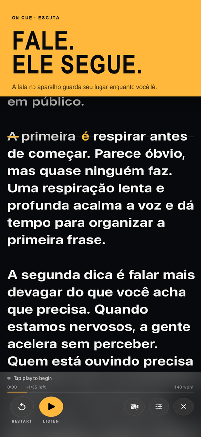
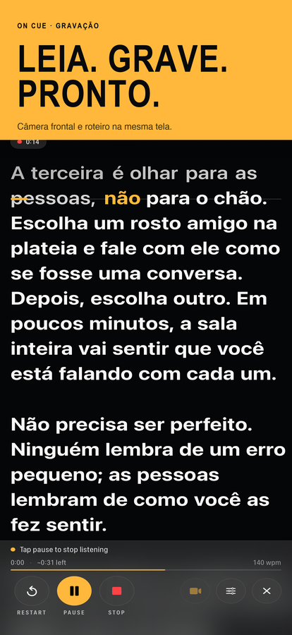
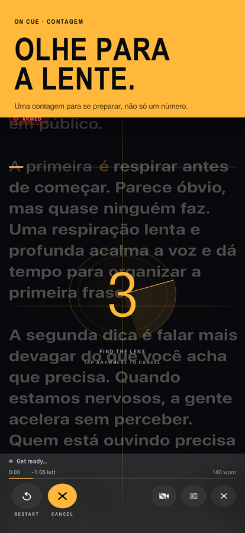
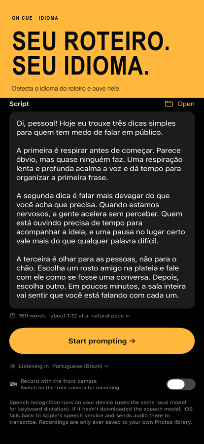

Um teleprompter que segue a sua voz.
Fale, e o roteiro rola com você. Pare, e ele espera. Reformule uma frase, pule uma palavra ou recomece uma frase — ele não perde o seu lugar, porque ouve o que você realmente diz em vez de rolar numa velocidade fixa que você precisa acompanhar.
Baixar na App StoreiPhone e iPad · iOS 16 ou posterior · Compra única, sem assinatura, sem conta




O que ele faz
Segue a sua voz
O reconhecimento de fala compara o que você diz com o seu roteiro e mantém a linha em que você está na linha de leitura. Pause o tempo que quiser. Para avançar ou voltar uma linha sem tocar no telefone, diga “scroll down” ou “scroll up” (os comandos de voz são em inglês).
Ouve no seu idioma
O On Cue reconhece o idioma do roteiro que você abre e passa a ouvir nele — português, italiano ou qualquer idioma que o seu iPhone reconheça. No primeiro uso, começa no idioma do seu iPhone.
Grava enquanto você lê
Um toque começa a ouvir e a filmar ao mesmo tempo. Gravação pela câmera frontal com o roteiro sobreposto, salva direto no app Fotos, na resolução e taxa de quadros que o seu aparelho suporta.
Aguenta improviso
Sair do roteiro é o normal, não um erro. Pule adiante ou improvise uma frase — ele encontra você de novo em vez de ficar parado esperando uma palavra que você nunca disse.
Feito para ler
Tamanho do texto e margens ajustáveis, quatro alinhamentos, uma linha de leitura que você pode arrastar para perto da lente e contraste por palavra para o roteiro continuar legível sobre uma imagem clara.
Sabe quanto tempo dura
Contagem de palavras e duração estimada enquanto você escreve. Tempo decorrido, tempo restante e o seu ritmo enquanto você fala — medido pela velocidade com que você realmente fala, não suposto.
Fica no seu aparelho
O On Cue não envia o seu roteiro nem as suas gravações para lugar nenhum. O reconhecimento de fala roda no próprio aparelho sempre que o iOS permite.